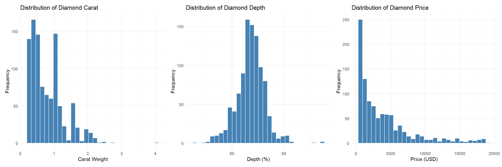
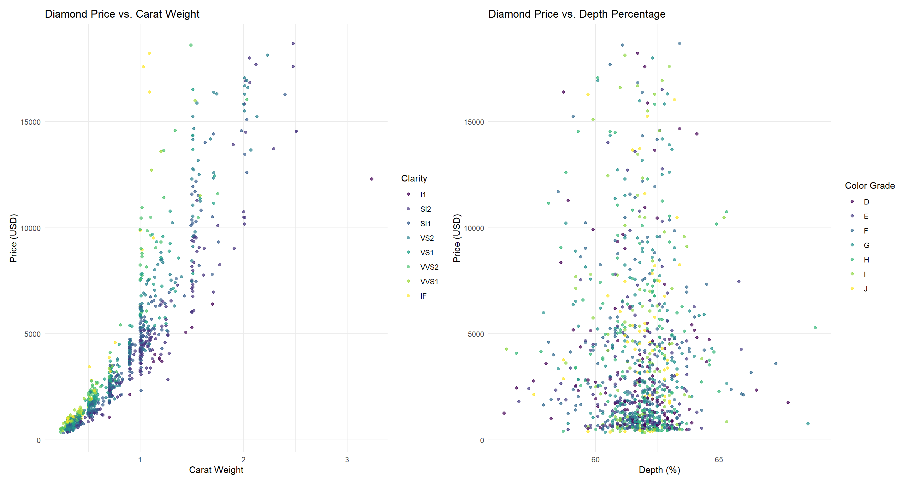
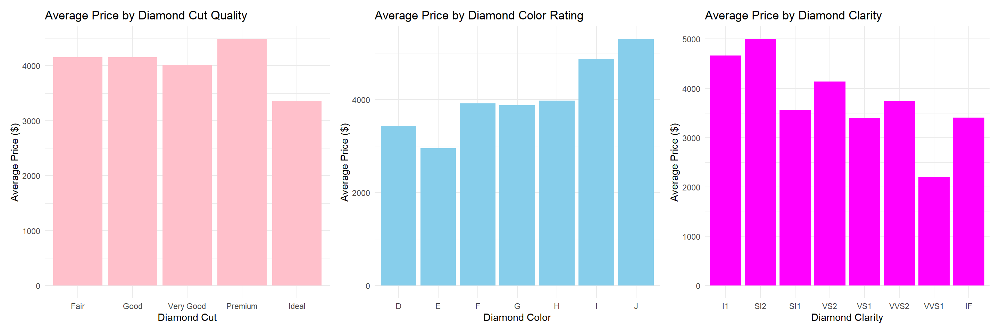
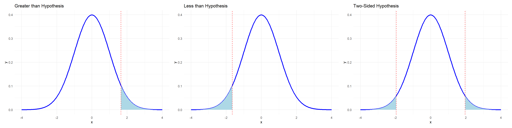
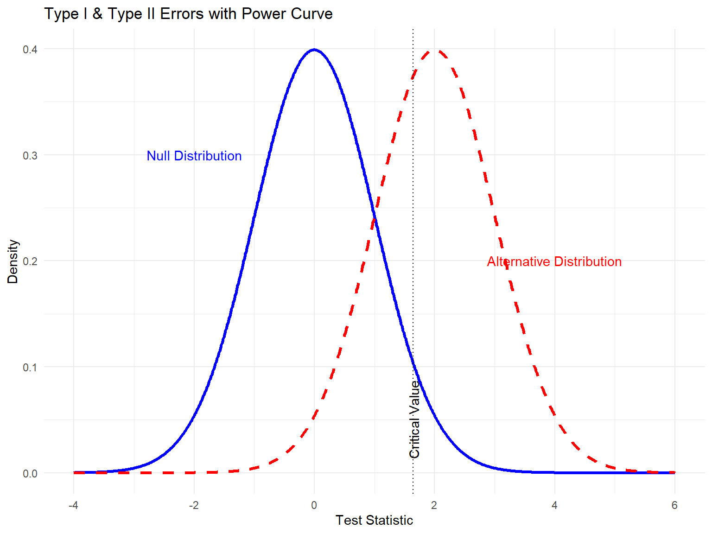
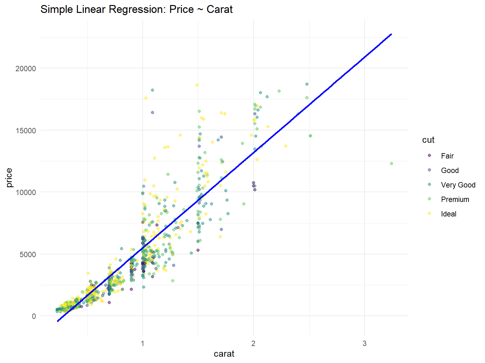
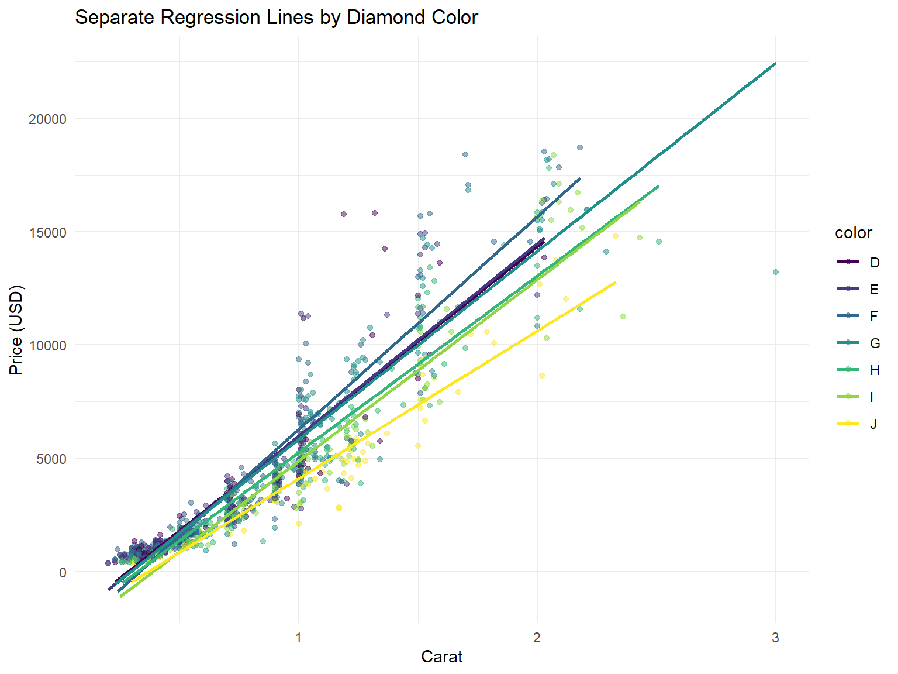
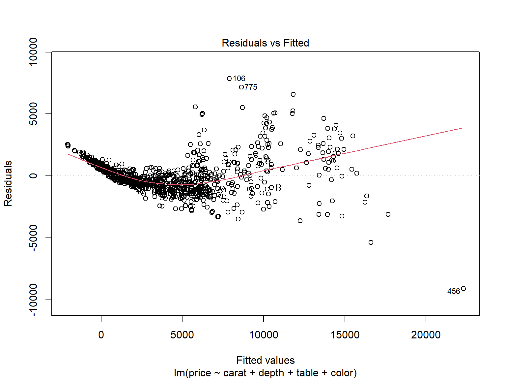
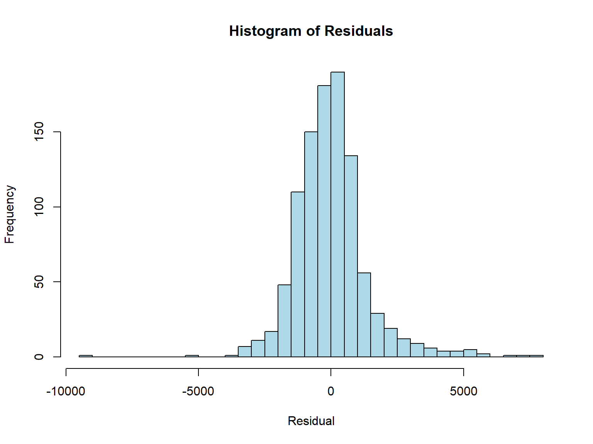
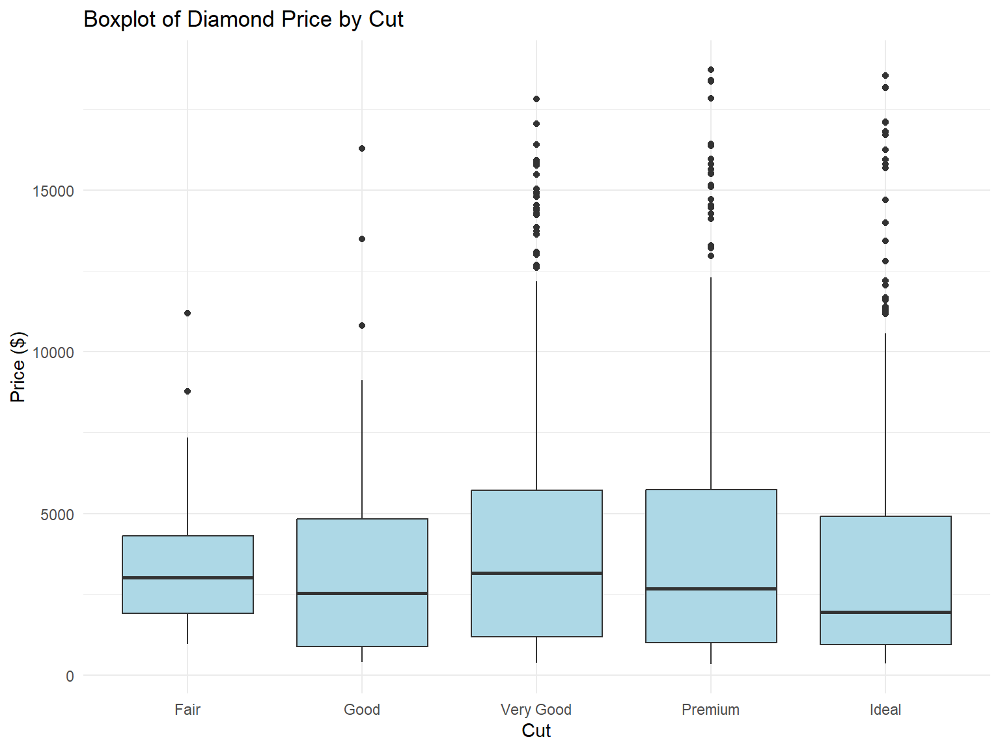

| carat | cut | color | clarity | depth | table | price | x | y | z |
|---|---|---|---|---|---|---|---|---|---|
| 1.02 | Good | G | VS2 | 63.8 | 59.0 | 6080 | 6.34 | 6.27 | 4.02 |
| 0.31 | Ideal | F | VVS1 | 61.9 | 53.5 | 882 | 4.36 | 4.39 | 2.71 |
| 0.60 | Premium | D | SI2 | 61.3 | 61.0 | 1428 | 5.46 | 5.40 | 3.33 |
| 0.41 | Ideal | E | IF | 62.1 | 54.0 | 1419 | 4.75 | 4.81 | 2.97 |
| 0.72 | Very Good | H | VS1 | 62.2 | 54.0 | 2877 | 5.74 | 5.76 | 3.57 |
| 1.20 | Ideal | F | VS2 | 62.6 | 56.0 | 8486 | 6.78 | 6.73 | 4.23 |
MA206: Introduction to Probability and Statistics
To Cadets:
This course, MA206, introduces you to the foundational principles of probability and statistics, emphasizing data literacy and inference. It begins with Block I, covering data types, visualization, and basic probability rules including counting and the behavior of random variables. Block II builds on this by exploring discrete and continuous distributions, the Central Limit Theorem, and tools for one-sample inference such as confidence intervals and hypothesis testing for proportions and means. Finally, Block III develops cadets’ ability to analyze relationships between variables through two-sample tests, linear regression, ANOVA, and goodness-of-fit testing. By the end of the course, cadets will be equipped to make sound, data-driven decisions grounded in statistical reasoning.
Every statistical analysis begins with a clear, repeatable process that transforms curious questions into reliable insights. The Six Step Method serves as your roadmap—guiding you from formulating a meaningful research question through data collection, exploration, inference, and finally thoughtful reflection—so that every conclusion you draw is both rigorous and reproducible.
Six Step Method
- Describe how the six steps of a statistical investigation apply to a particular statistical study:
- Ask a research question
- Design a study and collect data
- Explore the data
- Draw inferences beyond the data
- Formulate conclusions
- Look back and ahead
- Ask a research question
- Think of and write research questions that could be investigated with a statistical study.
- Identify the observational units and variables in a statistical study.
- Classify variables as categorical or quantitative.
A Note on Technology:
In this course the primary tool used for data analysis is R. Throughout this course you will implement techniques for summarizing, visualizing, and analyzing data. The primary focus of this course is not for you to become masters in coding, however building on skills learned in CY105 will help your analysis in understanding how to use information technology to demonstrate successful outcomes in this course.
1 BLOCK I: Data and Randomness
1.1 Types of Data, Sampling, and Bias
Fundamental to statistical analysis is understanding the types of data we encounter, the methods we use to collect them, and the potential sources of bias that can undermine the validity of our conclusions. We distinguish between categorical (qualitative) and quantitative (numerical) data. Categorical variables can further be broken down into nominal (color, baseball position, type of animal), ordinal (I had a very bad/somewhat bad/neutral/good/very good experience at CFT), and binary (Yes I passed Air Assault/No I did not). Quantitative data can also be broken down into either discrete or continuous. Understanding these distinctions is critical for selecting the correct tools for analysis and interpretation.
The two methods of sampling in this course will be through simple random sampling or convenience sampling. The difference in application is whether we can generalize our results to the larger population. As an example, say I do not have an exhaustive list of cadet ID numbers to randomly select from. Instead, I only can stand in Central Area after class at 1630 and survey the first 50 cadets that willingly take my survey. There is a certain sub-population I am probably missing (1st Reg, 4th Reg, Corps Squad, etc). This is a convenience sample. Instead, if I randomly select 50 C-Numbers from a complete list of the Corps obtained from the registrar, this would be a a true random sample of the Corps, whereas the former is what is known as selection bias.
Finally, we explore the concept of bias in data collection. We identify common sources such as selection bias, response bias, and measurement bias, and discuss how poor sampling practices or flawed survey design can distort findings. This lesson sets the stage for the rest of the course by highlighting the importance of thoughtful data collection and critical evaluation of data sources.
As an example let us look at a dataset aggregated from over 50,000 diamonds:
Each of the rows is an individual diamond, generally called an observation. Each of the columns are unique aspects measured for every observation, called variables. Variables are either categorical, qualitative aspects of each measurement, or quantitative, a numbered entry.
1.2 Exploratory Data Analysis
Understanding, communicating, and interpreting your data is paramount to any initial data analysis project. These are done through numerous visualizations and summary statistics which we will learn to regularly implement when given any new dataset.
1.2.1 One Variable – Visualizations and Summary Statistics
Starting with a variable-by-variable approach is a natural first step. This is done rapidly in R with the following few functions:
1.2.1.1 Histograms

Histograms tell us where most of the values for a quantitative variable lie in its given distribution. We can determine skewness, a measure of how lopsided the data appear or if there are any asymmetries or tails.
1.2.1.2 Boxplots

Similar to a histogram, a boxplot will tell us exactly where the median, 1st and 3rd quartiles, and outliers exist for any quantitative variable. The ‘whiskers’ are determined by \(1.5 \times IQR\) where the inter-quartile range is the \(3rd - 1st\) quartiles.
1.2.1.3 Summary Statistics
| Variable | Mean | Median | SD | Var | Min | Max |
|---|---|---|---|---|---|---|
| carat | 0.79 | 0.70 | 0.46 | 0.21 | 0.23 | 3.24 |
| depth | 61.77 | 61.90 | 1.40 | 1.97 | 56.30 | 68.90 |
| table | 57.48 | 57.00 | 2.26 | 5.11 | 50.00 | 66.00 |
| price | 3873.55 | 2387.00 | 3912.55 | 15308046.06 | 337.00 | 18692.00 |
| x | 5.72 | 5.68 | 1.10 | 1.21 | 3.88 | 9.44 |
| y | 5.72 | 5.68 | 1.09 | 1.20 | 3.90 | 9.40 |
| z | 3.53 | 3.52 | 0.68 | 0.46 | 2.39 | 5.85 |
The above are the predominant statistics you want to discern for every quantitative variable in your dataset. The benchmark location statistics are the mean, median, max, and min, while the standard deviation and variance are measures of how spread out the data are relative to one another.
\[ \begin{align} \text{Sample Mean: } \ \ & \bar{X} = \frac{1}{n}\sum_{i=1}^n x_i \\ \text{Sample Variance: } \ \ & S^2 = \frac{1}{n-1}\sum_{i=1}^n ( x_i - \bar{X} )^2 \\ \text{Sample Standard Deviation:} \ \ & s = \sqrt{\frac{1}{n-1}\sum_{i=1}^n ( x_i - \bar{X} )^2} \end{align} \]
Note: the standard deviation is the square root of the variance
1.2.2 Two Variables – Visualizations and Summary Statistics
1.2.2.1 Scatter Plots

A scatterplot is the main tool to visualize and identify a relationship between two quantitative variables. Oftentimes, coloring each observation by another categorical variable is a way to maximize effectiveness of a single plot, as you are encoding more information within the same space.
1.2.2.2 Bar Plots

Bar charts are visualizations when focusing your audience on a single categorical and a summary statistic or aspect of a quantitative variable. In practice, scatter-plots show more information since you can encode the categorical variable through another channel such as color, size, shape while keeping the horizontal and vertical axis for two separate quantitative variables.
1.2.2.3 Correlation
| carat | depth | table | price | |
|---|---|---|---|---|
| carat | 1.00 | 0.00 | 0.22 | 0.91 |
| depth | 0.00 | 1.00 | -0.32 | -0.02 |
| table | 0.22 | -0.32 | 1.00 | 0.17 |
| price | 0.91 | -0.02 | 0.17 | 1.00 |
Correlation is the only multivariate summary statistic we will be using in this course, used to describe how two variables tend to move in tandem with one another. A perfect linear association evokes a correlation of 1, the opposite being a perfect negative association with a correlation of -1. No association is implied by a correlation near 0.
Mathematically: > Definition > For any two variables X,Y, the correlation of X and Y are: \[ r = \frac{\sum_{i=1}^n (x_i - \bar{x})(y_i-\bar{y})}{\sum_{i=1}^n (x_i - \bar{x})^2\sum_{i=1}^n (y_i - \bar{y})^2} \]
1.3 Probability
1.3.1 Sample Space and Random Experiment (\(\Omega\))
A random experiment is a process that produces an outcome which cannot be predicted with certainty in advance. It must be well-defined, have more than one possible outcome, and be repeatable under similar conditions. Each performance of the experiment results in a single outcome from the sample space. The sample space is the set of all possible outcomes of a random experiment.
Definition:
- The sample space is the set of all possible outcomes of a random experiment, denoted \(\Omega\).
- An event is a subset of the sample space. It can represent one or more outcomes.
- If all outcomes in \(\Omega\) are equally likely, then for any event \(A\):
\[ \mathbb{P}(A) = \frac{\text{Number of outcomes in } A}{\text{Total outcomes in } \Omega} \]
Examples:
- Tossing a coin once: \(\Omega = {\text{Heads}, \text{Tails}}\)
- Rolling a 6-sided die: \(\Omega = {1, 2, 3, 4, 5, 6}\)
- Letter grade in MA206: \(\Omega = {A, B, C, D, F}\)
- Number of emails received in an hour: \(\Omega = {0, 1, 2, \dots}\)
1.3.2 Probability Measure (\(\mathbb{P}\))
A probability measure is a rule, denoted \(\mathbb{P}\), that assigns a number between 0 and 1 to every event in a collection of events (called a sigma-algebra, denoted \(\mathcal{F}\) ). These probabilities must follow three key rules, known as the axioms of probability.
Axioms of Probability
Non-Negativity
For any event \(A\), the probability is never negative:
\[ \mathbb{P}(A) \geq 0 \]Normalization
The probability of one of the events happening over the entire sample space is 1:
\[ \mathbb{P}(\Omega) = 1 \]Additivity (for disjoint events)
If events \(A_1, A_2, A_3, \dots\) are mutually exclusive (no overlap), then the probability that any one of them occurs is the sum of their individual probabilities:
\[ \mathbb{P}\left(\bigcup_{i=1}^{\infty} A_i\right) = \mathbb{P}(A_1) + \mathbb{P}(A_2) + \mathbb{P}(A_3) + \cdots \]
Example (Simple):
Let \(A\), \(B\), and \(C\) be outcomes when rolling a die:
- \(A = \{1\}\), $B = {3} $, \(C = \{5\}\)
- These are disjoint events (they don’t overlap).
- Then: \[ \mathbb{P}(A \cup B \cup C) = \mathbb{P}(A) + \mathbb{P}(B) + \mathbb{P}(C) = \frac{1}{6} + \frac{1}{6} + \frac{1}{6} = \frac{1}{2} \]
These three rules form the mathematical foundation of all probability calculations — everything else builds on them.
Set Theory
- The complement of an event \(A\), written \(A^c\), consists of all outcomes in \(\Omega\) that are not in \(A\):
\[ \mathbb{P}(A) + \mathbb{P}(A^c) = 1 \]
The intersection \(A \cap B\) consists of outcomes where both \(A\) and \(B\) occur.
The union \(A \cup B\) consists of outcomes where either \(A\), \(B\), or both occur:
\[ \mathbb{P}(A \cup B) = \mathbb{P}(A) + \mathbb{P}(B) - \mathbb{P}(A \cap B) \]
- Two events \(A\) and \(B\) are disjoint (mutually exclusive) if they cannot both occur:
\[ A \cap B = \varnothing \quad \text{and} \quad \mathbb{P}(A \cap B) = 0 \]
1.3.3 Conditional Probability
For events \(A\) and \(B\) with \(0 < P(B) \le 1\), the conditional probability of \(A\) given \(B\) is:
\[ P(A \mid B) = \frac{P(A \cap B)}{P(B)} \]
Example: One card is drawn from a standard deck.
Let \(A\): card is a Queen, and \(B\): card is a face card.
Find \(P(A)\), \(P(B)\), and \(P(A \mid B)\).
1.3.4 Law of Total Probability
LoTP
If \(E_1, \dots, E_n\) is a partition of the sample space (mutually exclusive and exhaustive), then for any event \(A\):
\[ P(A) = \sum_{i=1}^{n} P(E_i) P(A \mid E_i) \]
Example:
A fair die is rolled. Let event A: “an even number is rolled”.
Let:
- \(E_1\): roll is 1 or 2
- \(E_2\): roll is 3 or 4
- \(E_3\): roll is 5 or 6
Find:
- \(P(A \mid E_1)\), \(P(A \mid E_2)\), \(P(A \mid E_3)\)
- Then use the Law of Total Probability to find \(P(A)\)
1.3.5 Bayes’ Theorem
Switching the Conditioning of Events
Definition:
If \(E_1, \dots, E_n\) is a partition of the sample space and \(P(A) > 0\), then:
\[ P(E_k \mid A) = \frac{P(A \mid E_k) P(E_k)}{\sum_{i=1}^n P(A \mid E_i) P(E_i)} \]
Example:
Two urns:
- Urn 1: 1 red, 1 blue
- Urn 2: 3 red, 1 blue
Pick an urn at random, then draw one ball.
If the ball is red, what is the probability it came from Urn 1?
1.3.6 Counting Principles
Before we can begin a thorough treatment of probability, some concepts in counting are needed to identify four common situations. These arise depending on when things are “allowed” to repeat or the “order” items are chosen in matters. The ability to discern when these four situations arise is more than half the battle.
1.3.6.1 Ordered with Replacement
Think of the number of ways of choosing a 4-digit passcode on your phone.
The order of the numbers matters, and you are allowed to repeat the same number. So how many arrangements are there? Since repetition is allowed and order matters, there are 10 digits for each position, giving:
\[ \text{Ordered Arrangements with Replacement} = n^r = 10^4 = 10{,}000 \]
1.3.6.2 Ordered without Replacement
Think of the number of ways I can create a batting order from 9 position players.
The order still matters, but players cannot be repeated. This is a permutation — an ordered arrangement without replacement.
\[ {}_nP_r = P(n, r) = \frac{n!}{(n - r)!} \]
Note: Factorial in math is computed as \(5! = 5 \times 4 \times 3 \times 2 \times 1 = 120\).
For example, the number of ways to assign the first 3 batting positions from 9 players:
\[ {}_9P_3 = \frac{9!}{(9-3)!} = 9 \times 8 \times 7 = 504 \]
1.3.6.3 Unordered without Replacement
Think of how many ways you can choose 3 scoops of ice cream from 5 unique flavors without repeats.
Because order doesn’t matter and repeats aren’t allowed, we use combinations:
\[ {}_nC_k = \binom{n}{k} = \frac{n!}{k!(n-k)!} \]
1.3.6.4 Unordered with Replacement
Think of how many different combinations of 3 scoop ice cream cones you can make with 5 unique flavors while allowing repeats.
This is the trickiest scenario. The order doesn’t matter, and repetition is allowed. The formula is:
\[ \text{Unordered Arrangements with Replacement} = \binom{r+n-1}{r} = \frac{(r+n-1)!}{r!(n-1)!} \]
Example: choosing 3 scoops from 5 flavors (with repeats):
\[ \binom{3+5-1}{3} = \binom{7}{3} = 35 \]
This can be understood using the stars and bars method: selecting \(r\) scoops with \(n-1\) dividers. Imagine representing each scoop as a ★ (star) and using vertical bars | to separate flavor types. To choose \(r\) scoops from \(n\) flavors, you need \(r\) stars (for the scoops) and \(n - 1\) bars (to divide them into \(n\) categories). For example, if \(r = 3\) scoops and \(n = 5\) flavors, you arrange 3 stars and 4 bars in a row. One possible arrangement is ★ | ★★ | | |, which represents 1 scoop of flavor 1, 2 scoops of flavor 2, and 0 scoops of flavors 3, 4, and 5. The number of such arrangements is given by the combination formula \(\binom{r + n - 1}{r}\), since you are choosing positions for the \(r\) indistinguishable stars among the \(r + n - 1\) total positions (stars and bars combined).
Note: The above section may seem like it came out of nowhere, that is okay. A fundamental difficulty in probability is finding the sample space or event space due to finding the various different combinations/permutations sequences of different possibilities. To elaborate consider the next example:
Example: No Matching Pairs in a Shoe Sample
A closet contains \(n\) pairs of shoes (so \(2n\) total shoes). If \(2r\) shoes are chosen at random (where \(2r < n\)), what is the probability that no matching pair is selected?
We are selecting \(2r\) shoes such that no left and right shoe from the same pair are both chosen.
Strategy:
1. First choose \(2r\) distinct pairs from the \(n\) available — there are \(\binom{n}{2r}\) ways to do this.
2. From each of these \(2r\) selected pairs, choose only one shoe (either left or right) — there are \(2^{2r}\) ways to do this.
3. The total number of ways to choose any \(2r\) shoes out of \(2n\) is \(\binom{2n}{2r}\).
So, the desired probability is:
\[ \mathbb{P}(\text{No matching pair}) = \frac{\binom{n}{2r} \cdot 2^{2r}}{\binom{2n}{2r}} \]
2 BLOCK II: Univariate Inference
2.1 Random Variables, Expectation, and Variance
Random Variable
A random variable is a mapping that assigns a real number to every outcome in the sample space:
\[
X: \Omega \rightarrow \mathbb{R}
\]
Cumulative Distribution Function
A cumulative distribution function (CDF) is a function \(F_X: \mathbb{R} \rightarrow [0,1]\) defined by:
\[
F_X(x) = \mathbb{P}(X \le x)
\]
2.2 Discrete Random Variables
Discrete Random Variables
A discrete random variable is a random variable that takes countably many values in \(\mathbb{R}\).
Its probability mass function is given by:
\[
f_X(x) = \mathbb{P}(X = x)
\]
The expected value (mean) of a discrete random variable \(X\) is:
\[
\mathbb{E}[X] = \sum_x x \cdot \mathbb{P}(X = x)
\]
Definition (Variance):
The variance of a discrete random variable \(X\) is:
\[
\mathrm{Var}(X) = \mathbb{E}\left[(X - \mathbb{E}[X])^2\right] = \sum_x (x - \mathbb{E}[X])^2 \cdot \mathbb{P}(X = x)
\]
2.2.1 Binomial Distribution:
Let \(X \sim \text{Binomial}(n, p)\) where \(n \in \mathbb{N}\) and \(0 < p < 1\).
Probability Mass Function (PMF):
\[ \mathbb{P}(X = k) = \binom{n}{k} p^k (1 - p)^{n - k}, \quad \text{for } k = 0, 1, \dots, n \]Cumulative Distribution Function (CDF):
\[ F_X(x) = \mathbb{P}(X \le x) = \sum_{k=0}^{\lfloor x \rfloor} \binom{n}{k} p^k (1 - p)^{n - k} \]Expected Value:
\[ \mathbb{E}[X] = np \]Variance:
\[ \mathrm{Var}(X) = np(1 - p) \]
2.2.2 Geometric Distribution:
Let \(X \sim \text{Geometric}(p)\) be the number of trials until the first success (including the success), where \(0 < p < 1\).
Probability Mass Function (PMF):
\[ \mathbb{P}(X = k) = (1 - p)^{k - 1} p, \quad \text{for } k = 1, 2, 3, \dots \]Cumulative Distribution Function (CDF):
\[ F_X(x) = \mathbb{P}(X \le x) = 1 - (1 - p)^{\lfloor x \rfloor} \]Expected Value:
\[ \mathbb{E}[X] = \frac{1}{p} \]Variance:
\[ \mathrm{Var}(X) = \frac{1 - p}{p^2} \]
2.3 Continuous Random Variables
Continuous Random Variable
A continuous random variable takes infinitely many values in \(\mathbb{R}\). Its probability density function is given by:
\[
f_X(x) = \mathbb{P}(X = x)
\]
Note: We do not find probabilities with the pdf like the pmf of a discrete random variable. We integrate over a neighborhood of the support of X, as there is no probability mass at any single point for a continuous distribution.
The expected value (mean) of a continuous random variable \(X\) is:
\[
\mathbb{E}[X] = \int_{-\infty}^\infty x f_X(x)dx
\]
Definition (Variance):
The variance of a discrete random variable \(X\) is:
\[
\mathrm{Var}(X) = \mathbb{E}\left[(X - \mathbb{E}[X])^2\right] = \int_{-\infty}^\infty (x - \mathbb{E}[X])^2 f_X(x)dx = \mathbb{E}[X^2] - \mathbb{E}[X]^2
\]
2.3.1 Central Limit Theorem (CLT)
The Central Limit Theorem (CLT) is one of the most important results in statistics. It states that the sampling distribution of the sample mean \(\bar{X}\) becomes approximately normal as the sample size \(n\) increases, regardless of the shape of the population distribution (provided it has finite mean and variance).
Specifically, if \(X_1, X_2, \dots, X_n\) are i.i.d. random variables with mean \(\mu\) and variance \(\sigma^2\), then:
\[ \frac{\bar{X} - \mu}{\sigma / \sqrt{n}} \xrightarrow{d} \mathcal{N}(0,1) \quad \text{as } n \to \infty \]
This justifies the widespread use of the normal distribution to approximate sample means in practice.
Credit: The New York Times
2.3.2 Normal Distribution
The above video showed you the importance of this distribution, also called a Gaussian Distribution. Many natural phenomena are normally distributed.
Normal Distribution
Let \(X \sim \mathcal{N}(\mu, \sigma^2)\), where \(\mu \in \mathbb{R}\) and \(\sigma > 0\).
Probability Density Function (PDF):
\[ f(x) = \frac{1}{\sqrt{2\pi \sigma^2}} \exp\left( -\frac{(x - \mu)^2}{2\sigma^2} \right), \quad x \in \mathbb{R} \]Cumulative Distribution Function (CDF):
There is no closed-form expression, but it is denoted as:
\[ F_X(x) = \mathbb{P}(X \le x) = \Phi\left( \frac{x - \mu}{\sigma} \right) \]
where \(\Phi\) is the standard normal CDF.Expected Value:
\[ \mathbb{E}[X] = \mu \]Variance:
\[ \mathrm{Var}(X) = \sigma^2 \]
2.3.3 Exponential Distribution
This distribution is helpful to model continuous time-related events: time between system failures at a factory, time between phone calls at a call center, time between insurance claims received at a insurance firm. All these can be modeled with this useful continuous random variable.
Let \(X \sim \text{Exponential}(\lambda)\) with \(\lambda > 0\).
Probability Density Function (PDF):
\[ f(x) = \lambda e^{-\lambda x}, \quad x \ge 0 \]Cumulative Distribution Function (CDF):
\[ F_X(x) = \mathbb{P}(X \le x) = 1 - e^{-\lambda x}, \quad x \ge 0 \]Expected Value:
\[ \mathbb{E}[X] = \frac{1}{\lambda} \]Variance:
\[ \mathrm{Var}(X) = \frac{1}{\lambda^2} \]
2.4 Confidence Intervals
A confidence interval (CI) gives a range of plausible values for a population parameter based on a sample statistic. The general structure of any confidence interval is:
\[ \text{point estimate} \ \pm \ \text{margin of error} \]
More specifically, for large samples or when the sampling distribution of the estimate is approximately normal:
\[ \text{CI} = \hat{\theta} \ \pm \ z^* \cdot \text{SE}(\hat{\theta}) \]
Where:
- \(\hat{\theta}\) is the point estimate (e.g., \(\bar{x}\) for the mean, \(\hat{p}\) for a proportion)
- \(z^*\) is the critical value from the standard normal distribution (e.g., 1.96 for 95% confidence)
- \(\text{SE}(\hat{\theta})\) is the standard error of the estimate
This structure applies to many common settings:
CI for a population mean: \[ \bar{x} \pm z^* \cdot \frac{s}{\sqrt{n}} \]
CI for a population proportion: \[ \hat{p} \pm z^* \cdot \sqrt{\frac{\hat{p}(1 - \hat{p})}{n}} \]
2.4.0.1 Interpretation:
“We are 95% confident that the true population parameter lies within this interval.”
This does not mean there’s a 95% probability the parameter is in the interval — rather, it means that 95% of all intervals computed from repeated samples in this manner would contain the true parameter.
2.5 One Sample Hypothesis Testing
Hypothesis testing is a formal method for making inferences about a population using sample data. The whole test aspect is questioning if the statistic your sample shows is significantly different than a certain value in question. You have two underlying premises, referred to as the null and alternative hypotheses. The null hypothesis assumes that there is no difference: the statistic from your value is the same as the value you are testing. The alternative conflicts the null and says they are different. The process involves:
- State the null and alternative hypotheses. There are three different variants to create your hypotheses statements depending on what the question being asked entails.
- Greater than Alternative Hypothesis
\[ \begin{align} H_0: Parameter &= Value \ in \ Question \\ H_A: Parameter &> Value \ in \ Question \end{align} \]
The entire inference aspect of hypothesis testing is that you are using your sample statistic, a tangible aspect of your data, to make an argument about the population parameter, an entity that is unknown to you. This is why the hypotheses are written in terms of the parameter. You are testing whether an aspect or parameter about the population is greater than a benchmark value decided by you in advance.
- Less than Alternative Hypothesis
\[ \begin{align} H_0: Parameter &= Value \ in \ Question \\ H_A: Parameter &< Value \ in \ Question \end{align} \]
Very similarly, the less than hypothesis is also a one-sided hypothesis test in that you are only testing one side of the value, abeit this time if the population parameter is less than the tested value.
- Not equal to Alternative Hypothesis
\[ \begin{align} H_0: Parameter &= Value \ in \ Question \\ H_A: Parameter &\neq Value \ in \ Question \end{align} \]
This is the only two-sided hypothesis test, denoted with the not equal to alternative hypothesis. Both sides must be accounted for in this test, and therefore as we will see shortly require more evidence for significance.
- Choose a significance level \(\alpha\).
This is the threshold you will also decide to inform your certainty in your conclusions. As seen previously, unless you are finding the probability that something will happen in the entire sample space (which happens probability 1); ie, there are no absolutes. Therefore there is always a chance that your conclusion will be wrong. Here is where you decide how “often” you are willing to be wrong. Is it 1% of the time? 5% of the time? Think of the significance level as choosing the percentage of the time you are willing to be wrong in your conclusion, (I know this sounds weird). A common \(\alpha\) is 5%.
- Compute the test statistic.
Compute the relevant summary statistic. In this course you will either be calculating a sample proportion, denoted \(\hat{p}\) if the variable of interest is categorical or the sample mean \(\bar{X}\) if quantitative.
- Standardize the test statistic.
This step transforms your statistic so it can be treated as a random variable from a named distribution. For proportions this will be a Normal Random Variable, however if quantitative it will be a t-distributed random variable.
Credit: 365 Data Science
- Determine the p-value.
Once we have the standardized statistic, it can be treated as either a Standard Normal Random Variable or Student’s-t Random Variable. This is where the alternative hypotheses come in to play to determine the p-value: the probability that if the null hypothesis is indeed true you choose to make an argument supporting the alternative. To find the probability of a certain event happening in a continuous random variable, you integrate the probability density function with the limits of integration being the range of values the random variable could take. Both the Standard Normal and Student’s-t are continuous, so depending on your alternative hypothesis, your p-value is calculated by either of the following:
\[ \begin{align} \text{Greater Hypothesis} &&&& \text{Less than Hypothesis} &&&& \text{Two Sided Hypothesis} \\ \mathbb{P}(X>z) = \int_z^\infty f_X(x) dx &&&& \mathbb{P}(X<z) = \int_{-\infty}^z f_X(x)dx &&&& \mathbb{P}(X>z) = \int_{|z|}^\infty f_X(x)dx + \int_{-\infty}^{-|z|} f_X(x)dx \end{align} \]

- Making a conclusion based on comparison.
Once a p-value is obtained, reference it to the significance level chosen. If the p-value is greater than \(\alpha\), you fail to reject the null hypothesis, if it is smaller, you reject the null hypothesis, and then state what that means in the context of the problem.
2.5.1 Single Proportion
We conduct inference on a population proportion \(\pi\) relative to a hypothesized value \(\pi_0\). The test statistic is:
\[ z = \frac{\hat{p} - \pi}{\sqrt{\frac{\pi(1 - \pi)}{n}}} \]
2.5.1.1 Example: Test if more than 40% of diamonds are “Ideal” cut
Code
# Null hypothesis: pi = 0.40
pi <- 0.4
n <- nrow(diamonds)
phat <- mean(diamonds$cut == "Ideal")
# Test statistic and p-value
z <- (phat - pi) / sqrt(pi * (1 - pi) / n)
p_value <- 1 - pnorm(z)
cat("Z-statistic:", round(z, 3), "\n")Z-statistic: -0.22 Code
cat("P-value:", round(p_value, 4))P-value: 0.5872.5.2 Single Mean
We conduct inference on a population mean \(\mu\) relative to a hypothesized value \(\mu_0\). The test statistic is:
\[ t = \frac{\bar{x} - \mu_0}{s / \sqrt{n}} \]
2.5.2.1 Example: Test if the average diamond price is $4000.
Code
mu0 <- 4000
x_bar <- mean(diamonds$price)
s <- sd(diamonds$price)
n <- length(diamonds$price)
# Test statistic and p-value
t_stat <- (x_bar - mu0) / (s / sqrt(n))
p_value <- 2*(1 - pt(abs(t_stat), df = n - 1))
cat("T-statistic:", round(t_stat, 3), "\n")T-statistic: -3.912 Code
cat("P-value:", round(p_value, 4))P-value: 1e-042.5.3 Experimental Design: Power, Type I / Type II Error
In any hypothesis test, we face the possibility of making incorrect conclusions. These are formalized through Type I and Type II errors:
Type I Error (\(\alpha\)): Rejecting the null hypothesis when it is actually true. This is controlled by the significance level of the test, often set to \(\alpha = 0.05\).
Type II Error (\(\beta\)): Failing to reject the null hypothesis when the alternative is actually true. This is harder to control and depends on the true parameter, sample size, and variance.
Power of the Test: The probability of correctly rejecting the null hypothesis when the alternative is true: \[ \text{Power} = 1 - \beta \]
A powerful test detects meaningful effects and minimizes Type II error. Power increases when: - Sample size increases (\(n \uparrow\)) - Effect size increases (true parameter is farther from null) - Variability decreases (standard deviation \(\downarrow\)) - Significance level \(\alpha\) increases (easier to reject null)

This diagram shows: - The blue curve is the null distribution (centered at 0). - The red dashed curve is the alternative distribution (shifted mean). - The dotted vertical line is the critical value (e.g., \(z = 1.645\) for \(\alpha = 0.05\) in a one-sided test). - Area to the right of this cutoff under the null curve is \(\alpha\). - Area to the left of this cutoff under the alternative curve is \(\beta\). - The remaining area under the red curve (right tail) is power.
3 BLOCK III: Multivariate Inference
3.1 Two Sample Hypothesis Testing
3.1.1 Difference of Proportions
We compare two population proportions to determine whether there is a significant difference between them. The test statistic is:
\[ z = \frac{\hat{p}_1 - \hat{p}_2}{\sqrt{\hat{p}(1 - \hat{p}) \left( \frac{1}{n_1} + \frac{1}{n_2} \right)}} \]
Where \(\hat{p}\) is the pooled proportion.
3.1.2 Multiple Proportions (Chi-Square Test of Independence)
Used when comparing proportions across more than two groups.
3.1.2.1 Example: Is cut independent of color?
Code
tbl <- table(diamonds$cut, diamonds$color)
chisq.test(tbl)
Pearson's Chi-squared test
data: tbl
X-squared = 310.32, df = 24, p-value < 2.2e-16This test checks whether the distribution of cut types is independent of the diamond color. A small p-value suggests a dependency.
3.1.3 Difference of Means
Used to compare two independent sample means.
3.1.3.1 Example: Is the average price different between “Ideal” and “Fair” cuts?
Code
df <- diamonds %>% filter(cut %in% c("Ideal", "Fair"))
t.test(price ~ cut, data = df)
Welch Two Sample t-test
data: price by cut
t = 9.7484, df = 1894.8, p-value < 2.2e-16
alternative hypothesis: true difference in means between group Fair and group Ideal is not equal to 0
95 percent confidence interval:
719.9065 1082.5251
sample estimates:
mean in group Fair mean in group Ideal
4358.758 3457.542 This performs a two-sample t-test, assuming unequal variances by default. The null hypothesis is that the means are equal.
3.1.4 Paired Data
In paired designs, each observation in one group is paired with a related observation in the other. Since diamonds has no natural pairing, we’ll simulate a paired example.
3.1.4.1 Example (Simulated): Price before and after resizing a set of diamonds
Code
set.seed(123)
# Simulate paired prices: original and discounted
n <- 100
original_price <- sample(diamonds$price, n)
discounted_price <- original_price * runif(n, 0.85, 0.95)
t.test(original_price, discounted_price, paired = TRUE)
Paired t-test
data: original_price and discounted_price
t = 8.9496, df = 99, p-value = 2.132e-14
alternative hypothesis: true mean difference is not equal to 0
95 percent confidence interval:
342.2012 537.1645
sample estimates:
mean difference
439.6829 This tests whether the mean price before and after a simulated discount differs significantly.
3.2 Regression
In this section we continue our multivariate inference with creating models for the purpose of identifying significance between explanatory (predictor) variables and the response. The function used to create the model, \(\hat{y_i}=f(x_i)\) will make predictions, known as fitted values. Do to the variability in the data, these fitted values will not exactly predict the response (ie. \(y_i \neq \hat{y}\)) for all values in the response. These errors are the deviations from the response and the fitted values and are referred as residuals, with notation \(\epsilon_i = y_i - \hat{y}_i\).
To assess how well a model performs, the residuals are summarized in a few different methods:
3.2.0.1 Mean Absolute Deviation
The average magnitude of the residuals:
\[ MAD = \frac{1}{n}\sum_{i=1}^n |y_i - \hat{y}_i| \]
3.2.0.2 Mean Squared Error:
The average magnitude of the residual-squared.
\[ MSE = \frac{1}{n}\sum_{i=1}^n (y_i - \hat{y}_i)^2 \]
3.2.1 Simple Linear Regression
The above metrics could be applied to any model, however the central method to assess a linear relationship between two quantitative variables isSimple Linear Regression, or better known as the line of best fit:
\[ \hat{y} = \beta_0 + \beta_1 x \]
The \(\beta\)’s are the parameters of the model: the y-intercept and slope. The reason the method is the best fit is because we optimizes the choices for these two parameters by minimizing the sum of squared error:
\[ \begin{align} SSE &= \sum_{i=1}^n (\epsilon_i)^2 \\ &= \sum_{i=1}^n (y_i - \widehat{y}_i)^2 \\ &= \sum_{i=1}^n (y_i - \beta_0 - \beta_1 x_i)^2 \\ \frac{\partial}{\partial \beta_0}SSE &= \frac{\partial}{\partial \beta_0} \sum_{i=1}^n (y_i - \beta_0 - \beta_1x_i)^2 \\ 0 &= -2\sum_{i=1}^n (y_i - \beta_0 - \beta_1x_i) \\ \widehat{\beta}_0 &= \bar{y} - \widehat{\beta}_1 \bar{x} \\ \frac{\partial}{\partial \beta_1}SSE &= \frac{\partial}{\partial \beta_1} \sum_{i=1}^n (y_i - \beta_0 - \beta_1x_i)^2 \\ &= \frac{\partial}{\partial \beta_1} \sum_{i=1}^n (y_i - (\bar{y} - \widehat{\beta}_1 \bar{x}) - \widehat{\beta}_1x_i)^2 \\ 0 &= -2\sum_{i=1}^n (\bar{x} - x_i)(y_i - \bar{y} + \widehat{\beta}_1( \bar{x} - x_i)) \\ \widehat{\beta}_1 \sum_{i=1}^n (x_i - \bar{x})^2 &= \sum_{i=1}^n (x_i - \bar{x})(y_i - \bar{y}) \\ \widehat{\beta}_1 &= \frac{\sum_{i=1}^n (x_i - \bar{x})(y_i - \bar{y})}{\sum_{i=1}^n (x_i - \bar{x})^2} = \frac{\mathrm{Cov}(X,Y)}{\mathrm{Var}(X)} \end{align} \]
The above is beyond the scope of this course, however it warrants a healthy appreciation for finding the line of best fit!
In practice, from the diamonds dataset we could model price as a function of carat:
Code
# Sample and fit model
set.seed(206)
df <- ggplot2::diamonds %>% sample_n(1000)
lm_simple <- lm(price ~ carat, data = df)
summary(lm_simple)
Call:
lm(formula = price ~ carat, data = df)
Residuals:
Min 1Q Median 3Q Max
-8077.3 -813.1 10.2 607.5 8759.7
Coefficients:
Estimate Std. Error t value Pr(>|t|)
(Intercept) -2376.64 93.40 -25.45 <2e-16 ***
carat 7885.65 99.37 79.35 <2e-16 ***
---
Signif. codes: 0 '***' 0.001 '**' 0.01 '*' 0.05 '.' 0.1 ' ' 1
Residual standard error: 1499 on 998 degrees of freedom
Multiple R-squared: 0.8632, Adjusted R-squared: 0.8631
F-statistic: 6297 on 1 and 998 DF, p-value: < 2.2e-16There is a lot in the summary output, however the main ideas here lie in the magnitude and sign of the coefficient, looking for practical significance, and also looking at the size of the p-value relative to a chosen \(\alpha\), checking for statistical significance.
You may be wondering in a line of best fit, where did the p-value come from? Good question! In addition to finding the line of best fit, our linear model assesses the relevance of all parameters in the model. This assessment is a *one-sample t-test for every ! If there is significance, then there is a significant assocation between the explanatory variable and the response.

3.2.2 Multiple Linear Regression
We can extend linear regression to in fact include as many predictor variables as we want (as long as we have more observations than variables!). This is implemented through Multiple Linear Regression:
\[ \widehat{y} = \beta_0 + \beta_1 x_1 + \beta_2 x_2 + \dots + \beta_p x_p \]
The derivation would be too lengthy to do them individually previously, however through Matrix Algebra (MA371 anyone?!), the solved vector of coefficients, \(\widehat{\beta}_{p\times1}\) has the following solution:
\[ \widehat\beta_{p\times 1} = (X_{p\times n}^TX_{n \times p})^{-1}X_{p \times n}^T \vec{y}_{n \times 1} \] Observe the subscripts for the dimensions of the matrices, ending with a \(p \times 1\) vector for the coefficients that minimize the SSE.
Here, we use carat(Q), depth(Q), table(Q), and color(Q) to predict price.
Note
When a categorical variable like color is included in a regression model, R converts it into multiple indicator (dummy) variables, one for each level except the reference level (usually the first alphabetically, unless manually changed).
Each dummy variable shifts the intercept of the regression line for that level, while the slope(s) for the numeric predictors remain the same. This means:
R is effectively fitting a separate line of best fit for each level of the categorical variable — all with the same slope, but different intercepts.
For example, including color in lm(price ~ carat + depth + table + color) produces:
- One baseline line (intercept) for the reference group (e.g.,
color = "D"). - Additional parallel lines for each other color group (e.g.,
E,F,G, etc.), each shifted vertically by its corresponding coefficient (e.g.,colorE,colorF, etc.).
So if the coefficient for colorE is -500, then diamonds with color E are estimated to be $500 less expensive than D-colored diamonds at the same carat, depth, and table values.
This approach captures group differences in the starting point (intercepts) of the response, while assuming the effect of continuous predictors (e.g. carat) is constant across all groups.
Code
lm_multi <- lm(price ~ carat + depth + table + color, data = df)
summary(lm_multi)
Call:
lm(formula = price ~ carat + depth + table + color, data = df)
Residuals:
Min 1Q Median 3Q Max
-9095.0 -787.8 -80.5 568.3 7873.0
Coefficients:
Estimate Std. Error t value Pr(>|t|)
(Intercept) 10739.61 2692.30 3.989 7.12e-05 ***
carat 8251.22 97.16 84.920 < 2e-16 ***
depth -112.34 33.40 -3.364 0.000799 ***
table -115.68 20.77 -5.569 3.30e-08 ***
color.L -1555.67 146.23 -10.639 < 2e-16 ***
color.Q -843.07 133.77 -6.303 4.40e-10 ***
color.C -85.92 129.08 -0.666 0.505778
color^4 75.10 117.70 0.638 0.523580
color^5 -123.89 116.66 -1.062 0.288500
color^6 -72.64 104.92 -0.692 0.488903
---
Signif. codes: 0 '***' 0.001 '**' 0.01 '*' 0.05 '.' 0.1 ' ' 1
Residual standard error: 1385 on 990 degrees of freedom
Multiple R-squared: 0.8842, Adjusted R-squared: 0.8832
F-statistic: 840.1 on 9 and 990 DF, p-value: < 2.2e-16You can compare \(R^2\) values and p-values to determine whether the additional variables meaningfully improve the model.
3.2.2.1 Adding Interaction Terms
What if the effect of one variable depends on another? For example, maybe the impact of carat on price differs across color levels. In that case, we can include an interaction term in the model:
Code
lm_interact <- lm(price ~ carat * color, data = df)
summary(lm_interact)
Call:
lm(formula = price ~ carat * color, data = df)
Residuals:
Min 1Q Median 3Q Max
-9236.8 -767.5 -13.5 648.9 8199.4
Coefficients:
Estimate Std. Error t value Pr(>|t|)
(Intercept) -2642.59 99.53 -26.551 < 2e-16 ***
carat 8119.05 103.78 78.236 < 2e-16 ***
color.L -132.35 306.56 -0.432 0.666033
color.Q 315.80 290.51 1.087 0.277286
color.C -16.57 275.23 -0.060 0.952018
color^4 377.23 245.62 1.536 0.124911
color^5 593.39 239.84 2.474 0.013526 *
color^6 -225.89 209.92 -1.076 0.282167
carat:color.L -1533.77 313.82 -4.887 1.19e-06 ***
carat:color.Q -1137.53 294.94 -3.857 0.000122 ***
carat:color.C 110.35 287.00 0.384 0.700695
carat:color^4 -311.72 262.03 -1.190 0.234479
carat:color^5 -865.55 257.40 -3.363 0.000802 ***
carat:color^6 255.92 222.64 1.149 0.250641
---
Signif. codes: 0 '***' 0.001 '**' 0.01 '*' 0.05 '.' 0.1 ' ' 1
Residual standard error: 1375 on 986 degrees of freedom
Multiple R-squared: 0.8864, Adjusted R-squared: 0.8849
F-statistic: 591.9 on 13 and 986 DF, p-value: < 2.2e-16
Tip
Each level of the color factor has its own intercept and its own slope for carat.
The reference group (e.g., color = “D”) uses the coefficient for carat directly:
\[ \text{Slope}_D = \beta_{carat} \]
- For other groups, the slope is:
\[ \text{Slope}_{\text{color}} = \beta_{carat} + \beta_{\text{carat:color}} \]
Example: If carat has a coefficient of 8000 and carat:colorE has a coefficient of -1000, then for color E diamonds:
Intercept = Intercept + \(\beta_{\text{colorE}}\)
Slope = $8000 - 1000 = $7000
So carat still increases price for color E diamonds, but not as sharply as it does for the reference group (D).
Visualizing Interactions
You can visualize the effect of interaction terms by plotting separate regression lines for each group:
Code
ggplot(df, aes(x = carat, y = price, color = color)) +
geom_point(alpha = 0.5) +
geom_smooth(method = "lm", formula = y ~ x, se = FALSE) +
labs(
title = "Separate Regression Lines by Diamond Color",
x = "Carat",
y = "Price (USD)"
) +
theme_minimal()
Note: Each color group has its own slope and intercept, as determined by the interaction model.
Note
Multiple linear regression allows us to model relationships between one response variable and many predictors.
Categorical variables create parallel lines (same slope, different intercepts) unless interaction terms are added.
Interaction terms create separate lines of best fit (different slopes and intercepts) for each group.
3.2.3 Goodness of Fit
We use several metrics to assess the quality of a regression model:
- \(R^2\): Proportion of variance in the response explained by the predictors.
- Residual Standard Error (RSE): Average size of the residuals.
- F-statistic: Overall significance of the regression.
- Residual Plots: Visual diagnostics to assess assumptions.
Code
# Residual plot
plot(lm_multi, which = 1) # Residuals vs Fitted
Code
# Histogram of residuals
residuals <- resid(lm_multi)
hist(residuals, breaks = 30, col = "lightblue", main = "Histogram of Residuals", xlab = "Residual")
We want residuals to be roughly normally distributed and randomly scattered around zero to satisfy assumptions of linear regression.
3.2.4 ANOVA
Analysis of Variance (ANOVA) is a statistical method used to compare the means of three or more groups to determine if at least one of the group means is significantly different from the others.
3.2.4.1 Theoretical Foundation
ANOVA works by partitioning the total variability in the data into two components: - Between-group variability: how much the group means differ from the overall mean. - Within-group variability: how much individual observations vary within each group.
The core idea is that if the between-group variability is large relative to the within-group variability, then at least one group mean is likely different.
[ F = = ]
Where: - ( SSB ) = Sum of Squares Between - ( SSW ) = Sum of Squares Within - ( k ) = number of groups - ( n ) = total number of observations
If the calculated F-statistic is large, and the p-value is small (typically < 0.05), we reject the null hypothesis:
- ( H_0: _1 = _2 = = _k ) (all group means are equal)
- ( H_A: ) At least one group mean is different
3.2.4.2 Example: Do Different Diamond Cuts Have Different Average Prices?
We’ll use the diamonds dataset and compare the mean price across the five levels of the cut variable.
Code
# Sample for speed
set.seed(206)
df <- diamonds %>% sample_n(1000)
# Summary statistics by cut
df %>%
group_by(cut) %>%
summarise(mean_price = mean(price), n = n())# A tibble: 5 × 3
cut mean_price n
<ord> <dbl> <int>
1 Fair 3677. 28
2 Good 3429. 74
3 Very Good 4561. 226
4 Premium 4355. 273
5 Ideal 3590. 3993.2.4.3 Run ANOVA Test
Code
# One-way ANOVA: price ~ cut
anova_model <- aov(price ~ cut, data = df)
summary(anova_model) Df Sum Sq Mean Sq F value Pr(>F)
cut 4 1.996e+08 49901236 3.065 0.016 *
Residuals 995 1.620e+10 16283224
---
Signif. codes: 0 '***' 0.001 '**' 0.01 '*' 0.05 '.' 0.1 ' ' 1This will output the F-statistic and p-value. A small p-value (e.g. < 0.05) suggests that at least one cut has a significantly different mean price.
3.2.5 Visualize the Group Differences
Code
ggplot(df, aes(x = cut, y = price)) +
geom_boxplot(fill = "lightblue") +
labs(title = "Boxplot of Diamond Price by Cut",
x = "Cut", y = "Price ($)") +
theme_minimal()
Boxplots help visualize both the median and spread of price within each cut level.
3.2.6 Follow-Up: Which Cuts Are Different?
If the ANOVA result is significant, we can follow up with a Tukey HSD test to identify which group pairs differ.
Code
TukeyHSD(anova_model) Tukey multiple comparisons of means
95% family-wise confidence level
Fit: aov(formula = price ~ cut, data = df)
$cut
diff lwr upr p adj
Good-Fair -247.90830 -2694.6097 2198.79307 0.9987125
Very Good-Fair 884.55594 -1324.7679 3093.87977 0.8096253
Premium-Fair 678.19322 -1510.0655 2866.45192 0.9157755
Ideal-Fair -86.59085 -2242.4691 2069.28738 0.9999672
Very Good-Good 1132.46424 -344.4875 2609.41597 0.2227928
Premium-Good 926.10152 -519.1496 2371.35262 0.4030816
Ideal-Good 161.31745 -1234.4209 1557.05582 0.9978434
Premium-Very Good -206.36272 -1198.0859 785.36051 0.9795621
Ideal-Very Good -971.14679 -1889.2153 -53.07827 0.0320166
Ideal-Premium -764.78408 -1630.9331 101.36495 0.1126355This test controls the family-wise error rate and gives pairwise confidence intervals and p-values.
3.2.7 Interpretation
- If p < 0.05 in the ANOVA, we conclude that at least one cut differs in mean price.
- Use TukeyHSD to find out which cuts are significantly different.
- ANOVA assumes:
- Independent observations
- Normally distributed residuals
- Equal variances across groups (can check with Levene’s test)